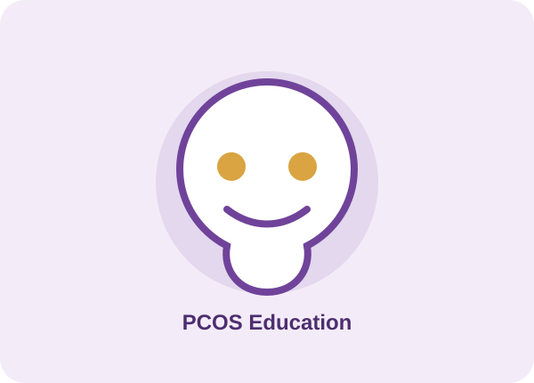

01
PCOS
Definition, symptoms, health risks, diagnosis and management.
An educational website developed from your supplied PCOS write-up, covering PCOS, the PCOS-to-PMOS terminology discussion, symptoms, awareness and reliable resources.

Learn about the condition and the major topics covered in the supplied write-up.
Definition, symptoms, health risks, diagnosis and management.
The terminology change and the reasons presented in the write-up.
Common symptoms and why symptoms alone do not confirm a diagnosis.